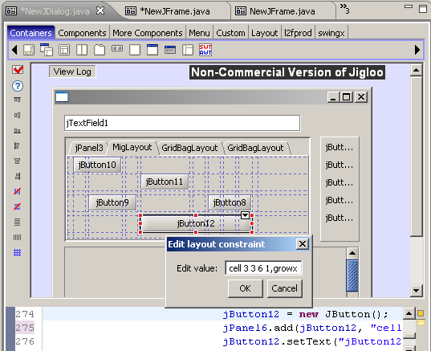
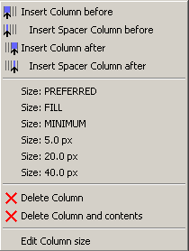
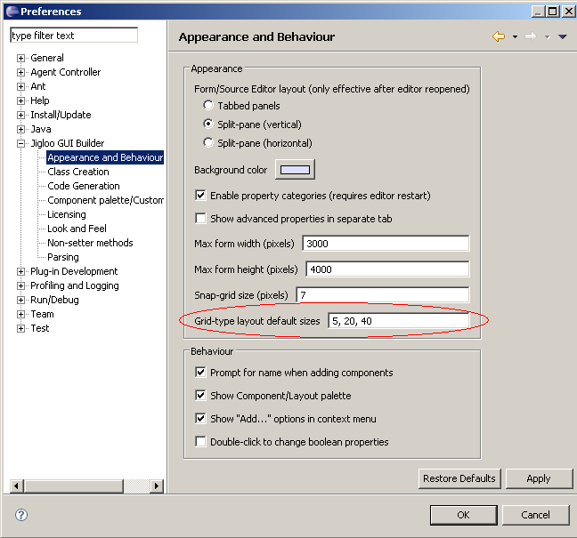
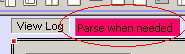
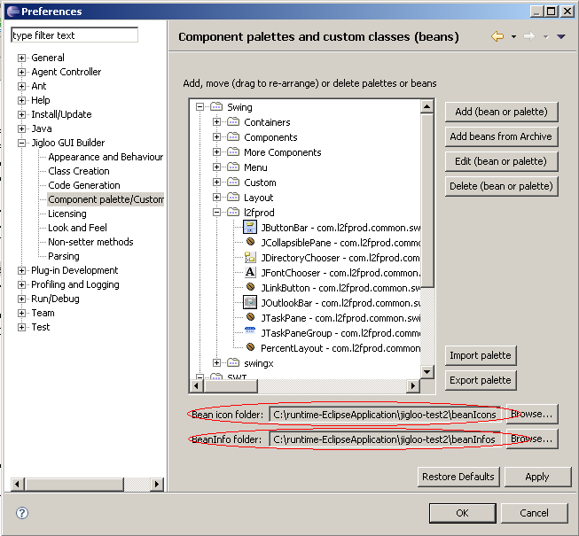
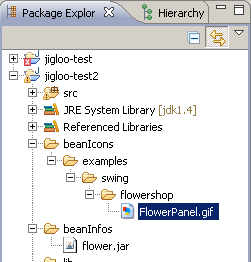

| Performance improvements Parsing is faster
A large memory leak (when re-parsing code or closing editors) is fixed. This should remedy the problem of Jigloo responding very slowly. Context menus appear more quickly. MigLayout supported for Swing forms For information on
MigLayout, see it's website.
It is designed to be a programmer-friendly layout with constraints
which permit a huge range of behaviours.
In Jigloo it is represented as a grid-based layout, and components can be moved around the grid and set to span cells like in the other grid-based layouts (ie, GridBag, Table, Form). In addition you have the ability to manually edit constraints, allowing the flexibility of MigLayout to be used fully.  Grid-type layout (Form, GridBag and Table) improvements You have more options in
the right-click menu for setting row/column constraints
For TableLayout you can set size to "preferred", "fill" or "min". 
And for Table, Form and
GridBag you can set the size to one of a set of values defined in the
preferences.

Support for generics Jigloo now parses Java 1.5
generics expressions.
Component Palette improvements Export improved - only the
palettes and/or components selected are exported.
Import improved - exported palettes/components will be merged with the existing palettes. Double-click to edit a bean or palette When adding beans from a library, the library is added to the current project. Inheritance improvement Protected fields and
methods from super class are accessible in
sub-classes (before Jigloo could only handle public inherited fields
and methods).
"Limited-parsing" improvement When you hit the
"parsing/no-parsing" button in the Outline view, or hit Ctrl+Alt+P then
Jigloo toggles between two modes:
1) "Parse after delay" mode - parses all manual code changes after a user-defined delay of a few seconds 2) "Parse-when-needed" mode - does not parse any manual code changes until the user clicks in the GUI editor, the "GUI properties" editor or the "GUI Outline" view.  Option #2 might be prefereable to anyone making any manual code changes since even after the code has been re-parsed Jigloo stays in the "parse when needed" mode. Global bean icon and BeanInfo folders The "Component
palette/custom classes" preference page (see below) has been enhanced
to allow you to define a global folder to hold bean icons, and another
to hold jars containing BeanInfo classes.
 The "bean icon" folder allows custom components to have their own icons in Jigloo without having to have their own BeanInfo class. Icons must be gifs, and must be named after the class they represent and placed in a folder structure that matches the package name. Eg, if your class was examples.swing.flowershop.FlowerPanel then the icon would be called FlowerPanel.gif and would be placed in the folder <global bean icon folder>/examples/swing/flowershop  In the example shown above, the "bean icon" folder is in one of the projects, but it is referenced as an absolute location so that it can be used from any project. You can also define a global "bean info" folder which is where you can put the jars that hold your BeanInfo classes. Jigloo will not search sub-folders, but it will include all jar or zip files in the main folder. Several bugs fixed As usual,
several bugs have been fixed in this version.
|